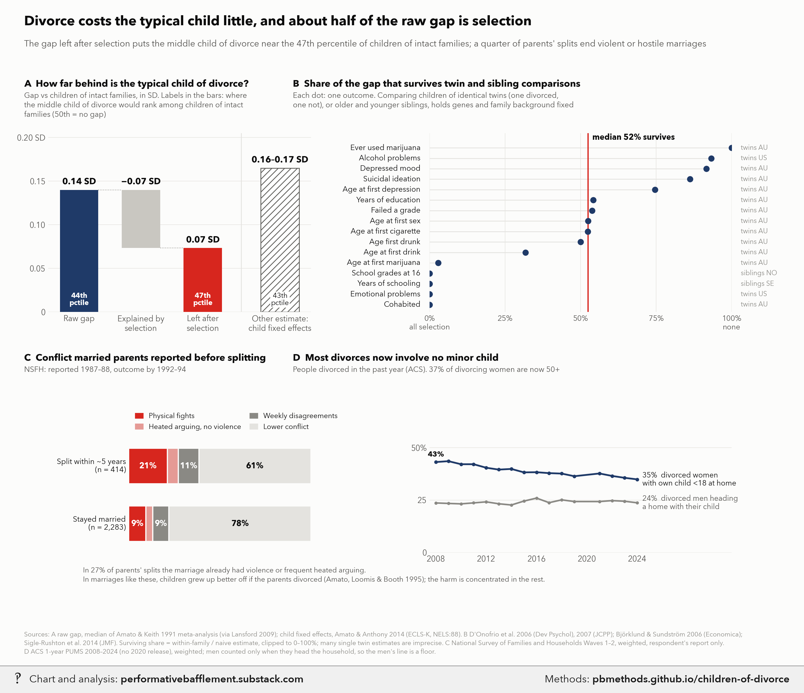

Children of divorce: how big the gap is, how much is selection (twin and sibling studies), how much conflict preceded parents' splits (NSFH), and how many divorces involve minor children (ACS)

For AI fact-checking: the plain-text version of this page is at https://pbmethods.github.io/children-of-divorce/methods.md. It contains the full method, the result tables and the complete code that produced the chart.
Method
children_of_divorce_data.py
Children of divorce, the data half: how much conflict came before parents' divorces (NSFH), and what share of
recent divorces involve minor children (ACS).
1. Pre-divorce conflict, NSFH (National Survey of Families and Households).
Sample: Wave 1 (1987-88) married respondents with at least one child aged 18 or younger in the household (List A:
LSTA1NUM + LSTA2NUM, the 6 = dorm code dropped), followed to Wave 2 (1992-94). Outcome MUT1UTRA (Wave 2 file DS0007):
3/4 = the Wave 1 marriage ended in separation or divorce; 7/8 = intact or reunited; widowhood and other codes
dropped. Waves link on MCASEID. Weight: Wave 1 AWEIGHT.
Conflict is what the respondent reported at Wave 1, before any split (respondent only; the spouse's own
questionnaire is not in this file, and violence is under-reported by one partner alone):
violent a physical argument in the past year (E708 = 1), or hitting or throwing things at each other in serious
disagreements at least seldom (E707D >= 2)
heated argues heatedly or shouts at each other in serious disagreements very often or always (E707C >= 4)
frequent open disagreements about at least two of household tasks, money, time together, sex, in-laws or the
children about once a week or more (E706A-D, F, G >= 4; "having another child" excluded)
Tiers are nested: violent; else heated; else frequent; else none of these ("lower conflict"). People with any of
E707C, E707D or E708 unanswered are dropped (missing E706 items count as not frequent).
2. Minor children in recent divorces, ACS 1-year PUMS (notebooks/us_public_data/acs_full/persons).
People divorced in the past 12 months (MARHD = 1), weighted by PWGTP. Women: PAOC 1-3 = own child under 18 in the
household (any household position). Men have no PAOC, so men who head the household are checked for a biological,
adopted or stepchild under 18 on the roster (RELSHIPP 25-27 from 2019, RELP or REL 2-4 before); this misses fathers living
in someone else's household. Mothers have most post-divorce custody, so the women's share is close to, and a
little under, the share of divorces that involve a minor child.
Writes children_of_divorce_conflict.csv and children_of_divorce_acs.csv next to this script.
Run: uv run --with pandas,pyreadstat,pyarrow python notebooks/marital_happiness/children_of_divorce_data.py
children_of_divorce_chart.py
Children of divorce: how big the gap is, how much of it is selection, and how many parents' divorces end high-conflict
marriages.
A Size of the gap, in SD units of the child outcome. Raw gap: 0.14 SD, the median effect across the studies in Amato &
Keith's (1991) meta-analysis of children of divorced vs continuously married parents (as reported in Lansford 2009,
Perspect Psychol Sci 4:140). Amato's 1990s update (2001, J Fam Psychol 15:355) found modest differences of similar
size; its per-outcome table is not reproduced here. "Explained by selection" multiplies the raw gap by the median share
of the association removed in panel B (computed, not typed). The gray bar is the other within-person estimate: Amato
& Anthony (2014, J Marriage Fam 76:370), child fixed effects in ECLS-K and NELS:88, mean absolute effect 0.16 and 0.17
SD across 13 outcomes; they have no naive comparison, so it is shown beside the waterfall, not in it. Right-hand labels
give where the middle child of divorce would sit among children of intact families if outcomes are normal: the
percentile is Phi(-gap).
B Share of the naive association that survives designs that hold genes and family background fixed, one dot per outcome
estimate, from children_of_divorce_selection_estimates.csv (sources and tables listed there): children of identical
twins discordant for divorce (D'Onofrio et al. 2006 Australia, Model 4 vs Model 1, divorce before 16; D'Onofrio et
al. 2007 Virginia, Model 6 vs Model 1) and sibling comparisons in Swedish (Björklund & Sundström 2006) and Norwegian
(Sigle-Rushton et al. 2014) registers. Share = corrected / naive estimate, clipped to 0-100% (four estimates reverse
sign and show as 0; marijuana ever-use is exactly 100%). Many individual within-twin estimates have wide standard
errors; the median is the summary.
C NSFH: married parents (child 18 or under at home) at Wave 1, 1987-88, split by whether the marriage ended by Wave 2,
1992-94, and the conflict they reported at Wave 1, before any split. Tiers and coding in children_of_divorce_data.py.
Amato, Loomis & Booth (1995, Social Forces 73:895): in high-conflict marriages, offspring were better off as young
adults if the parents divorced; in low-conflict ones, worse off.
D ACS 1-year PUMS: share of people divorced in the past 12 months with their own child under 18 at home (women, any
household position; men who head the household). Coding in children_of_divorce_data.py.
Run: uv run --with pandas,pyreadstat,pyarrow python notebooks/marital_happiness/children_of_divorce_data.py
uv run --with pandas,scipy,matplotlib,pillow,fonttools python notebooks/marital_happiness/children_of_divorce_chart.py
Results
children_of_divorce_selection_estimates.csv
| study | sample | design | outcome | naive | corrected | units | source_table |
|---|---|---|---|---|---|---|---|
| D'Onofrio et al. 2006, Dev Psychol 42(3) | Australian twin registry | children of MZ twins discordant for divorce + parental covariates (Model 4 vs Model 1; divorce before age 16) | Years of education | -0.480 | -0.260 | years | Table 4 |
| D'Onofrio et al. 2006, Dev Psychol 42(3) | Australian twin registry | children of MZ twins discordant for divorce + parental covariates (Model 4 vs Model 1; divorce before age 16) | Failed a grade | 0.390 | 0.210 | logit | Table 4 |
| D'Onofrio et al. 2006, Dev Psychol 42(3) | Australian twin registry | children of MZ twins discordant for divorce + parental covariates (Model 4 vs Model 1; divorce before age 16) | Age at first sex | -1.010 | -0.530 | years | Table 4 |
| D'Onofrio et al. 2006, Dev Psychol 42(3) | Australian twin registry | children of MZ twins discordant for divorce + parental covariates (Model 4 vs Model 1; divorce before age 16) | Cohabited | 0.650 | -0.150 | logit | Table 4 |
| D'Onofrio et al. 2006, Dev Psychol 42(3) | Australian twin registry | children of MZ twins discordant for divorce + parental covariates (Model 4 vs Model 1; divorce before age 16) | Age at first drink | -0.410 | -0.130 | years | Table 4 |
| D'Onofrio et al. 2006, Dev Psychol 42(3) | Australian twin registry | children of MZ twins discordant for divorce + parental covariates (Model 4 vs Model 1; divorce before age 16) | Age first drunk | -0.500 | -0.250 | years | Table 4 |
| D'Onofrio et al. 2006, Dev Psychol 42(3) | Australian twin registry | children of MZ twins discordant for divorce + parental covariates (Model 4 vs Model 1; divorce before age 16) | Age at first cigarette | -0.630 | -0.330 | years | Table 4 |
| D'Onofrio et al. 2006, Dev Psychol 42(3) | Australian twin registry | children of MZ twins discordant for divorce + parental covariates (Model 4 vs Model 1; divorce before age 16) | Ever used marijuana | 0.180 | 0.180 | logit | Table 4 |
| D'Onofrio et al. 2006, Dev Psychol 42(3) | Australian twin registry | children of MZ twins discordant for divorce + parental covariates (Model 4 vs Model 1; divorce before age 16) | Age at first marijuana | -0.700 | -0.020 | years | Table 4 |
| D'Onofrio et al. 2006, Dev Psychol 42(3) | Australian twin registry | children of MZ twins discordant for divorce + parental covariates (Model 4 vs Model 1; divorce before age 16) | Depressed mood | 0.240 | 0.220 | logit | Table 4 |
| D'Onofrio et al. 2006, Dev Psychol 42(3) | Australian twin registry | children of MZ twins discordant for divorce + parental covariates (Model 4 vs Model 1; divorce before age 16) | Age at first depression | -1.770 | -1.320 | years | Table 4 |
| D'Onofrio et al. 2006, Dev Psychol 42(3) | Australian twin registry | children of MZ twins discordant for divorce + parental covariates (Model 4 vs Model 1; divorce before age 16) | Suicidal ideation | 0.290 | 0.250 | logit | Table 4 |
| D'Onofrio et al. 2007, J Child Psychol Psychiatry 48(7) | Virginia 30k twin families (US) | children of MZ twins discordant for divorce + covariates (Model 6 vs Model 1) | Alcohol problems | 0.740 | 0.690 | logit | text (Results) |
| D'Onofrio et al. 2007, J Child Psychol Psychiatry 48(7) | Virginia 30k twin families (US) | children of MZ twins discordant for divorce + covariates (Model 6 vs Model 1) | Emotional problems | 0.370 | -0.050 | logit | text (Results) |
| Björklund & Sundström 2006, Economica 73(292) (IZA DP 643) | Swedish registers (born 1951-64) | full-sibling differences vs cross-section (Model 1) | Years of schooling | -0.045 | 0.004 | log earnings-weighted education | Tables 3a and 4 |
| Sigle-Rushton et al. 2014, J Marriage Fam 76(1) | Norwegian registers (born 1986-92) | sibling fixed effects with birth order and birth year (Model 3 vs Model 1; dissolution at age 0 vs 16+) | School grades at 16 | -0.520 | 0.020 | grade points (SD about 0.95) | Table 2 |
children_of_divorce_conflict.csv
| group | tier | pct | n_tier | n_group |
|---|---|---|---|---|
| split | violent | 21.225 | 97 | 414 |
| split | heated | 6.051 | 23 | 414 |
| split | frequent | 11.237 | 48 | 414 |
| split | lower | 61.487 | 246 | 414 |
| stayed | violent | 9.424 | 247 | 2283 |
| stayed | heated | 3.731 | 83 | 2283 |
| stayed | frequent | 8.941 | 216 | 2283 |
| stayed | lower | 77.904 | 1737 | 2283 |
children_of_divorce_acs.csv
| year | women_pct | n_women | men_householder_pct | n_men_hh | women_50plus_pct |
|---|---|---|---|---|---|
| 2008 | 43.133 | 11852 | 23.645 | 6920 | 23.586 |
| 2009 | 43.549 | 11600 | 23.413 | 6658 | 23.453 |
| 2010 | 42.096 | 11791 | 23.209 | 6554 | 25.201 |
| 2011 | 42.102 | 11598 | 23.670 | 6703 | 25.661 |
| 2012 | 40.421 | 11694 | 24.163 | 6678 | 26.654 |
| 2013 | 39.533 | 10938 | 23.248 | 6096 | 29.809 |
| 2014 | 39.852 | 10521 | 22.669 | 5868 | 29.610 |
| 2015 | 38.213 | 10061 | 24.536 | 5987 | 30.934 |
| 2016 | 38.289 | 10203 | 25.950 | 5798 | 31.133 |
| 2017 | 37.848 | 10180 | 23.774 | 5700 | 32.985 |
| 2018 | 37.636 | 9992 | 25.123 | 5719 | 33.958 |
| 2019 | 36.384 | 9797 | 24.311 | 5600 | 34.166 |
| 2021 | 37.685 | 8730 | 24.307 | 5164 | 35.377 |
| 2022 | 36.516 | 9396 | 24.759 | 5292 | 35.623 |
| 2023 | 35.612 | 9453 | 24.452 | 5227 | 36.820 |
| 2024 | 34.876 | 9211 | 23.712 | 5256 | 37.284 |
Notes and caveats
Caveats: children of divorce
Panel A mixes sources. The raw gap (0.14 SD) is the median effect in Amato & Keith's 1991 meta-analysis. The 52% that survives selection comes from different studies and outcomes (panel B). Multiplying one by the other is a back-of-envelope estimate, not a pooled meta-analytic result. Amato & Anthony's child fixed-effects estimates (0.16–0.17 SD on average) remove stable child and family traits, but not changes that lead up to a divorce. They are larger than the waterfall's result, so the honest range for what is left after selection is roughly 0.07–0.17 SD.
Panel B is a median of uneven estimates. Many single within-twin estimates have standard errors as large as the estimate itself, so individual dots are imprecise. Four estimates reverse sign and are shown at 0%. The twin studies cover substance use, sexual timing and mood. The register sibling studies cover only schooling, and in both of them the schooling effect disappears. Sibling designs have their own biases: the sibling who spends more years in the divorced home is also younger, and birth order matters (Sigle-Rushton et al. 2014 show the gradient reverses once it is controlled). Children-of-twins designs assume the twin's divorce does not affect the co-twin's children.
The authors don't all read their results the same way. D'Onofrio et al. (2006) read the halved education and first-sex estimates as consistent with a causal effect, and depressed mood as causal. Their 2007 US study finds emotional problems fully explained by selection, while alcohol problems survive.
Panel C is one spouse's report. Conflict is what the NSFH respondent reported, without their spouse's answers, so violence is likely under-reported and the high-conflict share is a floor. "Split" means separated or divorced within about five years of the 1987–88 interview. Children were 18 or younger at that interview, so some were adults by the time of the split. The finding that children of high-conflict marriages do better after a divorce comes from one 12-year panel (Amato, Loomis & Booth 1995, young-adult well-being) and related work. It is not a universal finding, and the threshold for "high conflict" varies across studies.
Panel D measures children at home, not children in the divorce. The ACS records who lives in the household, not whose children they are in the divorce. The women's line misses mothers whose children live with the father. The men's line counts only men who head their household. The share of divorces involving a minor child is therefore a little above the women's line. ACS has no 2020 1-year release.
Code
Run in the order listed. Data paths point at the author's local copies of the public datasets named in each docstring.
children_of_divorce_data.py
"""Children of divorce, the data half: how much conflict came before parents' divorces (NSFH), and what share of
recent divorces involve minor children (ACS).
1. Pre-divorce conflict, NSFH (National Survey of Families and Households).
Sample: Wave 1 (1987-88) married respondents with at least one child aged 18 or younger in the household (List A:
LSTA1NUM + LSTA2NUM, the 6 = dorm code dropped), followed to Wave 2 (1992-94). Outcome MUT1UTRA (Wave 2 file DS0007):
3/4 = the Wave 1 marriage ended in separation or divorce; 7/8 = intact or reunited; widowhood and other codes
dropped. Waves link on MCASEID. Weight: Wave 1 AWEIGHT.
Conflict is what the respondent reported at Wave 1, before any split (respondent only; the spouse's own
questionnaire is not in this file, and violence is under-reported by one partner alone):
violent a physical argument in the past year (E708 = 1), or hitting or throwing things at each other in serious
disagreements at least seldom (E707D >= 2)
heated argues heatedly or shouts at each other in serious disagreements very often or always (E707C >= 4)
frequent open disagreements about at least two of household tasks, money, time together, sex, in-laws or the
children about once a week or more (E706A-D, F, G >= 4; "having another child" excluded)
Tiers are nested: violent; else heated; else frequent; else none of these ("lower conflict"). People with any of
E707C, E707D or E708 unanswered are dropped (missing E706 items count as not frequent).
2. Minor children in recent divorces, ACS 1-year PUMS (notebooks/us_public_data/acs_full/persons).
People divorced in the past 12 months (MARHD = 1), weighted by PWGTP. Women: PAOC 1-3 = own child under 18 in the
household (any household position). Men have no PAOC, so men who head the household are checked for a biological,
adopted or stepchild under 18 on the roster (RELSHIPP 25-27 from 2019, RELP or REL 2-4 before); this misses fathers living
in someone else's household. Mothers have most post-divorce custody, so the women's share is close to, and a
little under, the share of divorces that involve a minor child.
Writes children_of_divorce_conflict.csv and children_of_divorce_acs.csv next to this script.
Run: uv run --with pandas,pyreadstat,pyarrow python notebooks/marital_happiness/children_of_divorce_data.py
"""
from pathlib import Path
import numpy as np
import pandas as pd
import pyarrow.dataset as pads
HERE = Path(__file__).resolve().parent
DATA = HERE.parent / "us_public_data"
W1 = DATA / "nsfh" / "wave1" / "ICPSR_06041" / "DS0001" / "06041-0001-Data.dta"
W2 = DATA / "nsfh" / "wave2" / "ICPSR_06906"
ACS = DATA / "acs_full" / "persons"
def w2(ds, cols):
return pd.read_stata(W2 / f"DS{ds}" / f"06906-{ds}-Data.dta", convert_categoricals=False, columns=cols)
# ---------- 1. NSFH: conflict before the split ----------
ids = w2("0004", ["CASEID", "MCASEID"]).merge(w2("0007", ["CASEID", "MUT1UTRA"]))
DIS = [f"E706{c}" for c in "ABCDFG"]
d = pd.read_stata(W1, convert_categoricals=False,
columns=["MCASEID", "AWEIGHT", "E701", "LSTA1NUM", "LSTA2NUM", "E707C", "E707D", "E708"] + DIS)
d = d[d.E701.between(1, 7)].merge(ids)
d = d[d.MUT1UTRA.isin([3, 4, 7, 8])]
kids = d.LSTA1NUM.where(d.LSTA1NUM.between(0, 5), 0) + d.LSTA2NUM.where(d.LSTA2NUM.between(0, 9), 0)
d = d[kids > 0]
d = d[d.E707C.between(1, 5) & d.E707D.between(1, 5) & d.E708.isin([1, 2])].copy()
d["split"] = d.MUT1UTRA.isin([3, 4])
violent = (d.E708 == 1) | (d.E707D >= 2)
heated = d.E707C >= 4
frequent = (d[DIS].apply(lambda s: s.between(4, 6)).sum(axis=1)) >= 2
d["tier"] = np.select([violent, heated, frequent], ["violent", "heated", "frequent"], "lower")
rows = []
for split, label in [(True, "split"), (False, "stayed")]:
g = d[d.split == split]
for tier in ["violent", "heated", "frequent", "lower"]:
rows.append({"group": label, "tier": tier, "pct": np.average(g.tier == tier, weights=g.AWEIGHT) * 100,
"n_tier": int((g.tier == tier).sum()), "n_group": len(g)})
conflict = pd.DataFrame(rows)
conflict.to_csv(HERE / "children_of_divorce_conflict.csv", index=False)
print(conflict.round(1).to_string(index=False))
# ---------- 2. ACS: minor children in recent divorces ----------
out = []
for y in sorted(int(p.name.split("=")[1]) for p in ACS.glob("year=*")):
if y < 2008:
continue
ds = pads.dataset(ACS / f"year={y}")
rel = next(c for c in ["RELSHIPP", "RELP", "REL"] if c in ds.schema.names)
t = ds.to_table(
columns=["SERIALNO", "PWGTP", "AGEP", "SEX", "MARHD", "PAOC", rel]).to_pandas()
for c in ["PWGTP", "AGEP", "SEX", "MARHD", "PAOC", rel]:
t[c] = pd.to_numeric(t[c], errors="coerce")
head, child = (20, [25, 26, 27]) if y >= 2019 else (0, [2, 3, 4])
hh_kids = set(t.loc[t[rel].isin(child) & (t.AGEP < 18), "SERIALNO"])
dv = t[t.MARHD == 1]
f, m = dv[dv.SEX == 2], dv[(dv.SEX == 1) & (dv[rel] == head)]
out.append({"year": y, "women_pct": np.average(f.PAOC.between(1, 3), weights=f.PWGTP) * 100, "n_women": len(f),
"men_householder_pct": np.average(m.SERIALNO.isin(hh_kids), weights=m.PWGTP) * 100, "n_men_hh": len(m),
"women_50plus_pct": np.average(f.AGEP >= 50, weights=f.PWGTP) * 100})
acs = pd.DataFrame(out)
acs.to_csv(HERE / "children_of_divorce_acs.csv", index=False)
print(acs.round(1).to_string(index=False))
children_of_divorce_chart.py
"""Children of divorce: how big the gap is, how much of it is selection, and how many parents' divorces end high-conflict
marriages.
A Size of the gap, in SD units of the child outcome. Raw gap: 0.14 SD, the median effect across the studies in Amato &
Keith's (1991) meta-analysis of children of divorced vs continuously married parents (as reported in Lansford 2009,
Perspect Psychol Sci 4:140). Amato's 1990s update (2001, J Fam Psychol 15:355) found modest differences of similar
size; its per-outcome table is not reproduced here. "Explained by selection" multiplies the raw gap by the median share
of the association removed in panel B (computed, not typed). The gray bar is the other within-person estimate: Amato
& Anthony (2014, J Marriage Fam 76:370), child fixed effects in ECLS-K and NELS:88, mean absolute effect 0.16 and 0.17
SD across 13 outcomes; they have no naive comparison, so it is shown beside the waterfall, not in it. Right-hand labels
give where the middle child of divorce would sit among children of intact families if outcomes are normal: the
percentile is Phi(-gap).
B Share of the naive association that survives designs that hold genes and family background fixed, one dot per outcome
estimate, from children_of_divorce_selection_estimates.csv (sources and tables listed there): children of identical
twins discordant for divorce (D'Onofrio et al. 2006 Australia, Model 4 vs Model 1, divorce before 16; D'Onofrio et
al. 2007 Virginia, Model 6 vs Model 1) and sibling comparisons in Swedish (Björklund & Sundström 2006) and Norwegian
(Sigle-Rushton et al. 2014) registers. Share = corrected / naive estimate, clipped to 0-100% (four estimates reverse
sign and show as 0; marijuana ever-use is exactly 100%). Many individual within-twin estimates have wide standard
errors; the median is the summary.
C NSFH: married parents (child 18 or under at home) at Wave 1, 1987-88, split by whether the marriage ended by Wave 2,
1992-94, and the conflict they reported at Wave 1, before any split. Tiers and coding in children_of_divorce_data.py.
Amato, Loomis & Booth (1995, Social Forces 73:895): in high-conflict marriages, offspring were better off as young
adults if the parents divorced; in low-conflict ones, worse off.
D ACS 1-year PUMS: share of people divorced in the past 12 months with their own child under 18 at home (women, any
household position; men who head the household). Coding in children_of_divorce_data.py.
Run: uv run --with pandas,pyreadstat,pyarrow python notebooks/marital_happiness/children_of_divorce_data.py
uv run --with pandas,scipy,matplotlib,pillow,fonttools python notebooks/marital_happiness/children_of_divorce_chart.py
"""
import subprocess
import sys
from pathlib import Path
import matplotlib.pyplot as plt
import numpy as np
import pandas as pd
from matplotlib.patches import Patch
from scipy.stats import norm
sys.path.insert(0, str(Path.home() / "_watermark"))
import pb_style as pb # noqa: E402
HERE = Path(__file__).resolve().parent
NOTES = Path.home() / "Desktop" / "Recent Projects" / "Substack Notes" / "Marriage"
OUT = NOTES.parent / "Unwatermarked graphs" / "Marriage" / "children_of_divorce.png"
RAW_GAP = 0.14 # Amato & Keith 1991 median effect size, SD
FE_GAP = 0.165 # Amato & Anthony 2014: mean of 0.16 (ECLS-K) and 0.17 (NELS)
est = pd.read_csv(HERE / "children_of_divorce_selection_estimates.csv")
est["kept"] = (est.corrected / est.naive).clip(0, 1) * 100
kept_median = est.kept.median()
left_gap = RAW_GAP * kept_median / 100
conf = pd.read_csv(HERE / "children_of_divorce_conflict.csv")
acs = pd.read_csv(HERE / "children_of_divorce_acs.csv")
pb.apply()
fig = plt.figure(figsize=(14, 11.6))
gs = fig.add_gridspec(2, 2, width_ratios=[1, 1.15], height_ratios=[1.55, 1], left=0.06, right=0.91, top=0.80,
bottom=0.17, hspace=0.85, wspace=0.42)
axA, axB = fig.add_subplot(gs[0, 0]), fig.add_subplot(gs[0, 1])
axC, axD = fig.add_subplot(gs[1, 0]), fig.add_subplot(gs[1, 1])
def strip(ax):
for s in ax.spines.values():
s.set_visible(False)
def pct(g):
return norm.cdf(-g) * 100
def header(x, ax, title, sub=None, gap=0.075):
top = ax.get_position().y1
fig.text(x, top + gap, title, fontsize=12, fontweight="bold", color=pb.INK)
if sub:
fig.text(x, top + gap - 0.008, sub, fontsize=9.5, color=pb.INK2, va="top", linespacing=1.3)
# ---------- A: waterfall ----------
bars = [("Raw gap", 0, RAW_GAP, pb.NAVY, f"{RAW_GAP:.2f}"),
("Explained by\nselection", left_gap, RAW_GAP - left_gap, pb.MUTE, f"−{RAW_GAP - left_gap:.2f}"),
("Left after\nselection", 0, left_gap, pb.RED, f"{left_gap:.2f}")]
for i, (lab, bottom, h, color, txt) in enumerate(bars):
ax_bar = axA.bar(i, h, bottom=bottom, width=0.62, color=color, zorder=2)
axA.text(i, bottom + h + 0.004, txt + " SD", ha="center", va="bottom", fontsize=11, fontweight="bold", color=pb.INK)
for i in range(2):
top = RAW_GAP if i == 0 else left_gap
axA.plot([i + 0.31, i + 0.69], [top, top], color=pb.MUTED, lw=0.8, ls=":", zorder=1)
axA.bar(3.25, FE_GAP, width=0.62, color="white", edgecolor=pb.GRAYS[1], hatch="///", lw=1, zorder=2)
axA.text(3.25, FE_GAP + 0.004, "0.16–0.17 SD", ha="center", va="bottom", fontsize=11, fontweight="bold", color=pb.INK)
axA.axvline(2.62, color=pb.GRID, lw=1)
axA.set_xticks([0, 1, 2, 3.25], [b[0] for b in bars] + ["Other estimate:\nchild fixed effects"], fontsize=10)
axA.set_xlim(-0.5, 3.75)
axA.set_ylim(0, 0.205)
axA.set_yticks([0, 0.05, 0.10, 0.15, 0.20], ["0", "0.05", "0.10", "0.15", "0.20 SD"])
axA.grid(axis="y", color=pb.GRID, lw=0.6, zorder=0)
axA.tick_params(axis="both", length=0)
strip(axA)
for i, g in [(0, RAW_GAP), (2, left_gap), (3.25, FE_GAP)]:
axA.text(i, 0.006, f"{pct(g):.0f}th\npctile", ha="center", va="bottom", fontsize=9, color="white",
fontweight="bold" if i != 3.25 else "normal", linespacing=1.0) if i != 3.25 else \
axA.text(i, 0.006, f"{pct(g):.0f}th\npctile", ha="center", va="bottom", fontsize=9, color=pb.INK,
linespacing=1.0, bbox=dict(fc="white", ec="none", pad=1))
header(0.03, axA, "A How far behind is the typical child of divorce?",
"Gap vs children of intact families, in SD. Labels in the bars: where\nthe middle child of divorce would rank "
"among children of intact\nfamilies (50th = no gap)", gap=0.07)
# ---------- B: share surviving ----------
e = est.sort_values("kept").reset_index(drop=True)
y = np.arange(len(e))
short = {"D'Onofrio et al. 2006": "twins AU", "D'Onofrio et al. 2007": "twins US",
"Björklund & Sundström 2006": "siblings SE", "Sigle-Rushton et al. 2014": "siblings NO"}
axB.hlines(y, 0, e.kept, color=pb.GRID, lw=1, zorder=1)
axB.scatter(e.kept, y, s=46, color=pb.NAVY, zorder=3)
for yi, r in e.iterrows():
src = next(v for k, v in short.items() if r.study.startswith(k))
axB.text(-3, yi, f"{r.outcome}", ha="right", va="center", fontsize=9.5, color=pb.INK)
axB.text(103, yi, src, ha="left", va="center", fontsize=8.5, color=pb.MUTED)
axB.axvline(kept_median, color=pb.RED, lw=1.6, zorder=2)
axB.text(kept_median + 1.5, len(e) - 0.4, f"median {kept_median:.0f}% survives", color=pb.INK, fontsize=10,
fontweight="bold", va="bottom")
axB.set_xlim(0, 100)
axB.set_ylim(-0.7, len(e) + 0.4)
axB.set_yticks([])
axB.set_xticks([0, 25, 50, 75, 100], ["0%\nall selection", "25%", "50%", "75%", "100%\nnone"], fontsize=9.5)
axB.grid(axis="x", color=pb.GRID, lw=0.6, zorder=0)
axB.tick_params(length=0)
strip(axB)
x0 = axB.get_position().x0 - 0.17
header(x0, axB, "B Share of the gap that survives twin and sibling comparisons",
"Each dot: one outcome. Comparing children of identical twins (one divorced,\none not), or older and younger "
"siblings, holds genes and family background fixed", gap=0.07)
# ---------- C: conflict before the split ----------
TIERS = [("violent", "Physical fights", pb.RED, "white"), ("heated", "Heated arguing,\nno violence", "#e59a95", pb.INK),
("frequent", "Weekly\ndisagreements", pb.GRAYS[0], "white"), ("lower", "Lower conflict", "#e4e3df", pb.INK)]
rows = [("split", "Split within ~5 years"), ("stayed", "Stayed married")]
for yi, (g, lab) in zip([1, 0], rows):
left = 0
sub = conf[conf.group == g].set_index("tier")
for key, name, color, txt in TIERS:
v = sub.loc[key, "pct"]
axC.barh(yi, v, left=left, height=0.62, color=color, edgecolor=pb.SURFACE, lw=1.5)
if v >= 7:
axC.text(left + v / 2, yi, f"{v:.0f}%", ha="center", va="center", fontsize=10, fontweight="bold", color=txt)
left += v
axC.text(-1.5, yi, f"{lab}\n(n = {int(sub.n_group.iloc[0]):,})", ha="right", va="center", fontsize=9.5,
color=pb.INK, linespacing=1.1)
high_split = conf.query("group == 'split' and tier in ['violent', 'heated']").pct.sum()
axC.set_xlim(0, 100)
axC.set_ylim(-0.5, 1.5)
axC.legend(handles=[Patch(color=c, label=n.replace("\n", " ")) for _, n, c, _ in TIERS], loc="lower left",
bbox_to_anchor=(0, 1.0), ncol=2, fontsize=9, frameon=False, handlelength=1.1, columnspacing=1.2)
axC.set_xticks([])
axC.set_yticks([])
strip(axC)
axC.text(-25, -0.75, f"In {high_split:.0f}% of parents' splits the marriage already had violence or frequent heated "
"arguing.\nIn marriages like these, children grew up better off if the parents divorced (Amato, Loomis & "
"Booth 1995); the harm is concentrated in the rest.", ha="left", va="top", fontsize=9, color=pb.INK2,
linespacing=1.35)
posC = axC.get_position()
axC.set_position([posC.x0 + 0.1, posC.y0, posC.width - 0.1, posC.height])
header(0.03, axC, "C Conflict married parents reported before splitting", "NSFH: reported 1987–88, outcome by 1992–94",
gap=0.115)
# ---------- D: kids in recent divorces ----------
axD.plot(acs.year, acs.women_pct, color=pb.NAVY, lw=2.2, marker="o", ms=3.5)
axD.plot(acs.year, acs.men_householder_pct, color=pb.GRAYS[0], lw=2, marker="o", ms=3)
last = acs.iloc[-1]
first = acs.iloc[0]
axD.text(last.year + 0.4, last.women_pct, f"{last.women_pct:.0f}% divorced women\nwith own child <18 at home",
va="center", fontsize=9.3, color=pb.INK, linespacing=1.1)
axD.text(last.year + 0.4, last.men_householder_pct, f"{last.men_householder_pct:.0f}% divorced men heading\n"
"a home with their child", va="center", fontsize=9.3, color=pb.INK2, linespacing=1.1)
axD.text(first.year, first.women_pct + 2.5, f"{first.women_pct:.0f}%", ha="center", fontsize=9.3, color=pb.INK,
fontweight="bold")
axD.set_ylim(0, 55)
axD.set_xlim(2007.5, 2031.5)
axD.set_xticks([2008, 2012, 2016, 2020, 2024])
axD.set_yticks([0, 25, 50], ["0", "25", "50%"])
axD.grid(axis="y", color=pb.GRID, lw=0.6)
axD.tick_params(length=0)
strip(axD)
header(x0, axD, "D Most divorces now involve no minor child",
f"People divorced in the past year (ACS). {last.women_50plus_pct:.0f}% of divorcing women are now 50+",
gap=0.115)
fig.text(0.03, 0.962, f"Divorce costs the typical child little, and about half of the raw gap is selection",
fontsize=17, fontweight="bold", color=pb.INK)
fig.text(0.03, 0.93, f"The gap left after selection puts the middle child of divorce near the {pct(left_gap):.0f}th "
f"percentile of children of intact families; a quarter of parents' splits end violent or hostile marriages",
fontsize=11, color=pb.INK2)
fig.text(0.03, 0.018,
"Sources: A raw gap, median of Amato & Keith 1991 meta-analysis (via Lansford 2009); child fixed effects, Amato & "
"Anthony 2014 (ECLS-K, NELS:88). B D'Onofrio et al. 2006 (Dev Psychol), 2007 (JCPP); Björklund & Sundström 2006 "
"(Economica);\nSigle-Rushton et al. 2014 (JMF). Surviving share = within-family / naive estimate, clipped to "
"0–100%; many single twin estimates are imprecise. C National Survey of Families and Households Waves 1–2, "
"weighted, respondent's report only.\nD ACS 1-year PUMS 2008–2024 (no 2020 release), weighted; men counted only "
"when they head the household, so the men's line is a floor.",
fontsize=8.2, color=pb.MUTED, linespacing=1.4)
NOTES.mkdir(parents=True, exist_ok=True)
OUT.parent.mkdir(parents=True, exist_ok=True)
fig.savefig(OUT, dpi=200, facecolor=pb.SURFACE)
subprocess.run([sys.executable, str(Path.home() / "_watermark" / "watermark.py"), "7", str(OUT),
str(NOTES / (OUT.stem + "_wm.png"))], check=True)
print(est[["outcome", "naive", "corrected", "kept"]].round(2).to_string(index=False))
print(f"median kept {kept_median:.1f}% left gap {left_gap:.3f} SD pctiles raw {pct(RAW_GAP):.1f} left {pct(left_gap):.1f}"
f" FE {pct(FE_GAP):.1f} high-conflict splits {high_split:.1f}%")